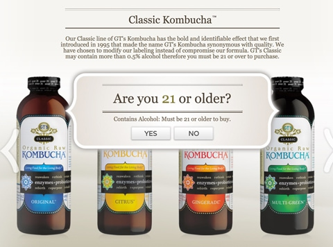
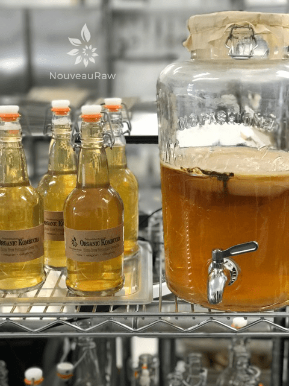

#1 – What is Kombucha?
 Kombucha is a fermented tea (yes, this stopped me in my tracks for many years learning that). It’s made with a starter culture called a SCOBY (Symbiotic Colony of Bacteria and Yeast), also referred to as a mother. Just like raw apple cider vinegar.
Kombucha is a fermented tea (yes, this stopped me in my tracks for many years learning that). It’s made with a starter culture called a SCOBY (Symbiotic Colony of Bacteria and Yeast), also referred to as a mother. Just like raw apple cider vinegar.
It is a probiotic of life’s energy. Pro = in favor of, biotic = life. Just like lemons, Kombucha is acidic, but with the synergism of digestion, kombucha becomes an alkaline forming food.
What does it taste like?
It is tangy, sweet, and tart, with a touch of effervescence. Once the microorganisms in the SCOBY act on the sweetened tea, there really is nothing tea-like about this drink. You can create endless flavors once you get the process started.
For ideas, or if you’ve never tried kombucha before, motor on over to the grocery or health food store and look at their kombucha selection. This will give you some good flavor ideas. The key is to try a few different brands and flavors because just trying one, won’t give you enough of an idea of its potential.
Frankly, my husband (Bob), has never liked kombucha but after I started brewing our own, he has fallen in love. And that’s the beauty of making your own because you can reduce or increase the brew time, tailoring it to your taste buds!
My First Experience with Kombucha, story time.
My very first run in with kombucha was back in culinary school, 2007? Where the heck do all the years go? Anyway, we were weeks into our schooling and for upwards of eight hours a day, we were nonstop creating and taste-testing recipes. You can imagine what effect this had on my digestive system. One day, I started to feel those effects, and my tummy was flip-flopping like a fish out of water. I had to excuse myself from the kitchen and go sit down.

Bob came out to check on me, and he suggested that I go down to the cafeteria and find something “grounding” to either eat or drink. As I waddled my way into the cafeteria, I found myself standing in front of the beverage cooler. The cool air rolling out from it felt inviting and welcoming. Not knowing what I wanted or even if anything sounded good, I spotted a bottle of kombucha. I had no clue what it was, other than a fellow student had previously told me that she drinks it daily and just loved them.
So, not to waste any more time, I grabbed and bottle and headed back up to class. I positioned myself at the table so I could still view what all the students were doing, while I worked on settling my tummy. I drank half a bottle of kombucha, and that’s when it hit me… a BUZZ! This was an unfamiliar feeling for me, but dang, I felt good! I hopped up and slid back into my cheffy position with the other students.
A little time passed, and Bob looked at me and inquired as to how I was feeling. As I slammed the palm of my hand on the counter, and with a huge grin on my face I announced that I felt great! It took Bob by surprise… as well as myself. What was in this kombucha?! And why was I feeling a bit buzzed? I approached the gal in class who told me that she drank it every day and asked her why I was feeling so light and dingy, I mean, airy. It was then that she informed me that there is a small percentage of alcohol in it. Only 0.5% (possibly more) but it was enough to effect this lightweight who never partakes of alcohol. Nowadays, Synergy who makes the brand I drank, split their production creating the Classic and the Enlightened label, The Classic stating that you must be over 21 years of age to purchase it.
So that was my introduction to kombucha. After that bottle, I tried some other brands, which back then, kombucha wasn’t as large of a craze as it is today, and found that I just didn’t care for it. So I skipped a handful of years of ever having it again. It was then that I realized that every brand came with its own unique flavor and some I liked and some I didn’t. I am also a label reader and was always in search for the lowest amount of sugar possible, so I found myself drinking the Synergy brand… the version where you don’t have to present your ID to purchase. Hehe, After forming a healthy, but somewhat expensive, habit of consuming kombucha, I decided it was time to make my own. I am a chef after all. And here we are!
What’s in Kombucha?
A live raw kombucha ferment is a true serendipitous adventure. It is never static, forever changing. So it’s safe to say that not all kombucha cultures will contain the same strains. The best method to achieve the widest possible range while maintaining the semi-sweet elixir is the Continuous Brewing Method.
- lactic acid: good for the digestive system
- acetic acid: is a powerful antibacterial agent
- malic acid: used for detoxing in the body
- oxalic acid: is a cellular production of energy
- gluconic acid: interacts with butyric acid to improve GI tract health.
- Glucaric Acid: expedite the detoxification of carcinogens, excess hormones and other toxins from the liver.
- Butyric acid: nourish healthy gut cells while seeking out and destroying colonic tumor cells and inflammation in the same breath.
- Niacinamide: a molecule that is shown to have anti-anxiety and anti-inflammatory properties
- nucleic acid: aids in healthy cell regeneration
- amino acid: building blocks of protein- helps rebid muscles
- enzymes: catalysts that speed the rate of reactions in the body- helps digestion
- Vitamins B, C, beneficial yeasts, and living bacteria
- Kombucha Brooklyn is another great source of more nutrients found in kombucha.
What are some Health Benefits of Kombucha?

Here is a list of possible benefits, but not just limited to:
- Detoxification: The liver is one of the body’s main detoxification organs. Kombucha is high in Glucaric acid, which is beneficial to the liver and aids its natural detoxification.
- Antioxidant power: Kombucha contains profuse amounts of organic acids such as glucuronic acids and powerful antioxidants which help in shielding the body from oxidative damage. This helps protect the body from associated diseases and inflammations. (source)
- Anti-microbial effects: Kombucha tea has anti-microbial properties. (source)
- Diabetes: The findings revealed that, compared to black tea, kombucha tea was a better inhibitor of α-amylase and lipase activities in the plasma and pancreas and a better suppressor of increased blood glucose levels.
- Arthritis: Many have reported improvement in arthritis. (source)
- Cellular health: Kombucha helps in maintaining cellular health which is vital for the healthy functioning of the body.
- Digestion: Kombucha is fermented with a living colony of bacteria and yeast, Kombucha is a probiotic beverage. This has a myriad of benefits such as improved digestion, fighting candida (harmful yeast) overgrowth, mental clarity, and mood stability
Some Risks and Cautions of Kombucha
- Bloating: Some people experience bloating from drinking it. This may in part be due to the presence of probiotics and potential changes in gut bacteria. The carbonation can also be the culprit in bloating. You can reduce this by skipping the carbonation process when making your own. If I buy store-bought kombucha, I open the bottle and let it decant.
- If kombucha is made incorrectly, it may contain harmful bacteria and could be dangerous.
- Caffeine: Caffeine content also decreases during fermentation, but there is some still present.

Kombucha Continuous Brew Method
Kombucha Maintenance of Continuous Brew
Kombucha – Equipment Needed
Kombucha – Ingredients Needed
Kombucha SCOBY – Growing from Scratch
Testing Sugar Levels in Kombucha
Bottling Kombucha from a Continuous Brew
Second Fermentation of Kombucha – Adding Flavor & Effervescence
Kombucha Aesthetics
Kombucha SCOBY Hotel
Dealing with Fruit Flies
© AmieSue.com